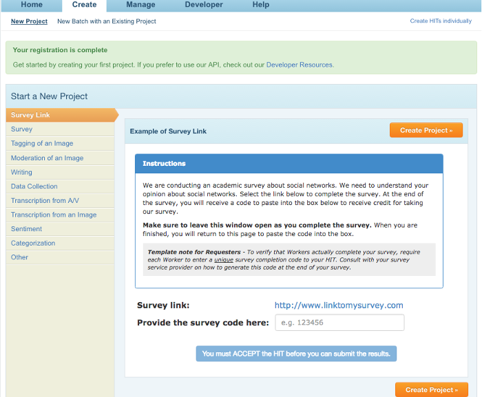
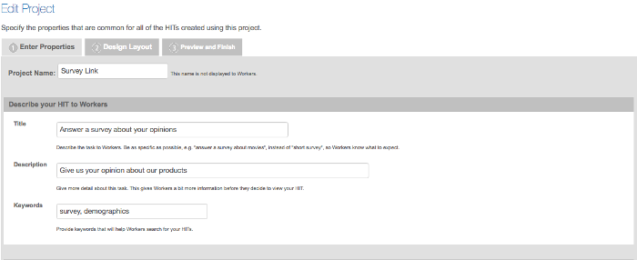
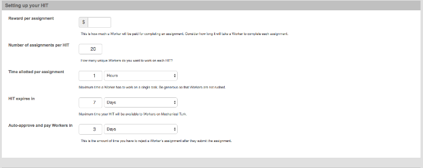
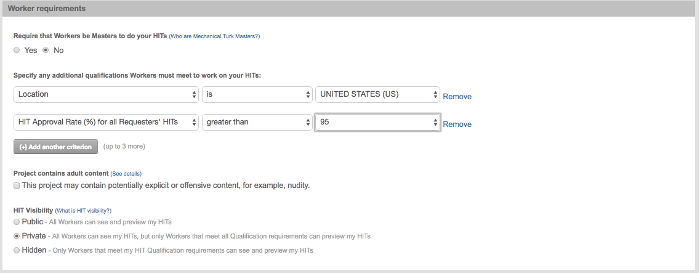
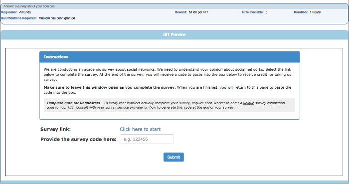
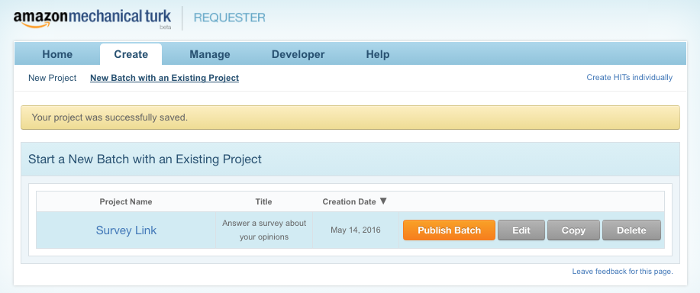
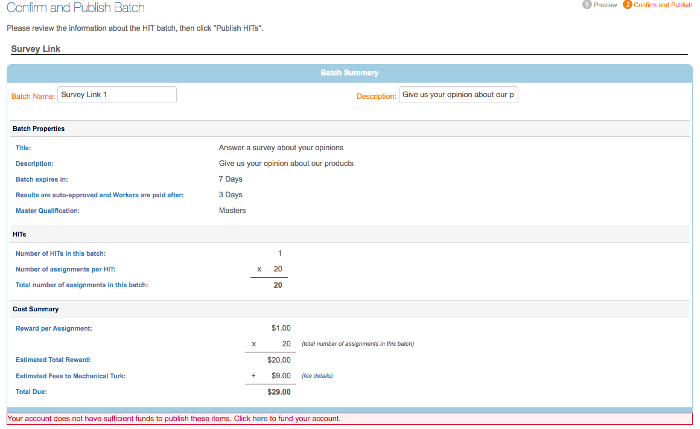
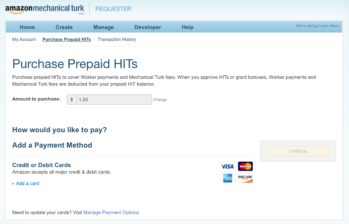
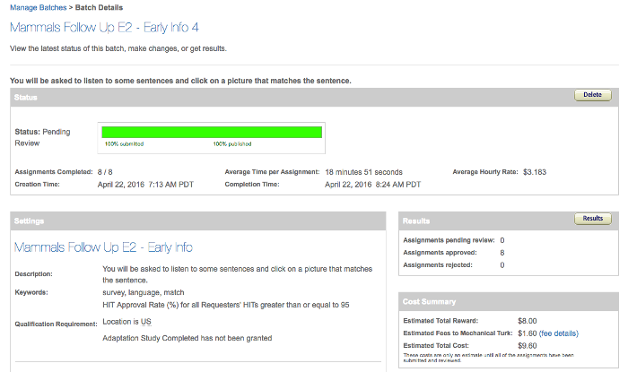

MTurk Tutorial
In this section we'll talk about what Amazon's mechanical Turk is, and why you might want to use it. How to set up an account, post studies, and pay participants.
In this section we'll talk about what Amazon's mechanical Turk is, and why you might want to use it. How to set up an account, post studies, and pay participants.
Mechanical Turk is an online tool provided by Amazon that allows requesters to post short tasks called HITs (Human Intelligence Tasks), to be completed by regular workers. The kinds of tasks a worker will do will often vary from simple tasks like transcribing words found embedded in pictures to complex surveys (some even much more complicated and time consuming than the work we post). Workers get paid for these tasks, and typically the pay scale varies based on the amount of work, and the difficulty of the work the worker is expected to do. It's important to note that while some people do this work to suppliment their income, some workers also do this work as their primary income source. We attempt to pay at a rate that would match how much the worker would make if s/he came into our lab. For more on this, Amazon provides a few answers on their website.
While a lot of research is still conducted in lab, there are a lot of reasons why researchers have switched to using Mechanical Turk. There are a few reasons why we've seen such a switch lately in the field. Here are a few for example:
First you need to set up an account. Start by going to Mechanical Turk. You are currently looking at the requester homepage of MTurk (this is the main website, used by both requesters and workers). Click on the "create an account" link at the top of the page. If you already have an amazon account, you can log in using that account. If not, switch the radio button to say that you are a new user. You will be asked to accept a user agreement - read through, and accept it if you agree to follow their terms of services. This should bring you to the requester homepage where you can begin to set up your first HIT. There are many types of templates available for different tasks. Today we'll use this "survey link" type.

Click on "Create Project" to get started. What you should now see is the first page for setting up the study. The first bit of this page asks you about information about your project. The project title is private, but the rest of the information will be shown to the workers (which is how they decide whether or not to do your HIT). Generally you want to give a short, concise summary of the kind of work they will be doing - but not exact details of your study, for example:
The next section allows you to set how much you will pay per HIT, how many HITs you want to post at once (I recommend <10, since >=10 will cost you extra in fees, how long you want to permit people to finish your task (as a general rule of thumb you want to make this time ~double how long you think your task will take to ensure that people have enough time to finish, but also to try to prevent them from wandering off in the middle of your study), how long before your HIT expires (unless you are running a lot of participants at once or running a SUPER long study, a day will be more than enough time), and finally, you can set when mturk will autopay participants (you can choose to pay or not pay participants before this time - or if you plan on accepting everyone (usually if IRB required) then you can set this time to be relatively short - workers look favorably on requesters that pay relatively quickly, and post good reviews on websites like turkopticon).
In the final section, you should set up some controls on which workers can see your HITs. You can choose which geographic location you would like your workers to come from. We specifically look for workers from the US (it's not perfect, but it is a way to try to select for English speakers), but you could set this to be specific states (e.g., Scott Fraundorf runs studies looking at a construction used in some states such as OH / PA, and sometimes just wants workers from those states). You likely also want to restrict your selection to workers who have been approved by most other workers (another potential step for quality control - the workers care a lot about their acceptance rate, as it often is used in this way, and so they really object to getting rejected).
The next section will be about what workers will see when they actually look at your HIT. On this page you can use the GUI to write a slightly more detailed description of your task (see: the short description you would give in lab participants before a task). If you have any other requirements it would be good to list them on this page. You will need to replace the survey link with the link for your study by using the <> source button. In the source code, you need to find the bit of code that says:Replace the bolded bit with the link to your survey, and the italicized bit with something like "Click here to start". Once you have made all of these
changes you can then move onto previewing your project. I typically double check that the link goes to the right survey at this point. You'll also get to see the
ad that is shown to the workers at this stage (see: the little blue box at the top is your HIT; your HIT will appear in a list of HITs to elligible workers, if they click on it, they'll see the
longer description).

After you've decided that everything looks right you're finished with setting it up and you should be brought back to a projects page like this:
Congrats! You've made your first project! All that's left is to post the HITs for subjects to participate.The next step is to post your hit. If you click on the "Create" tab you will return to this main projects page. By clicking on "Publish" you can begin
to post your HIT. You'll get a chance to review all of the information shown above (double check: how many HITs to post, how much to pay, selection
requirements, that your link works, etc). When you are ready to post, click "Next". You will then get a summary of the fees for posting this HIT.

At the bottom of this page you can click on a link to add funds to your account to pay for the HITs. This will take you to a seperate payments page. On this page you can set up a new creditcard or use one already attached to your account. If you know you will be running multiple HITs, you can figure out how much you need to pay in advance and pre-pay here (e.g., 4 batches of 8 HITs = 4 x $ shown on the previous page).
After you've paid, you can return to the tab with your HITs open, and click on "Publish". You should now be taken to the "Manage" page, which will show you a summary of the HIT you just posted, and will show you the status of your HIT (% complete), and a projected finish time (when the task will be done). And, now we wait.
When the task is finished running, you can choose to ACCEPT or REJECT the work done by the workers by clicking on the "Results" tab. If you REJECT the work the worker will not get paid and this will affect their overall rating (reminder: they are really protective of their rating). If you set a short pay time, and plan on ACCEPTing all HITs this can be done automatically.